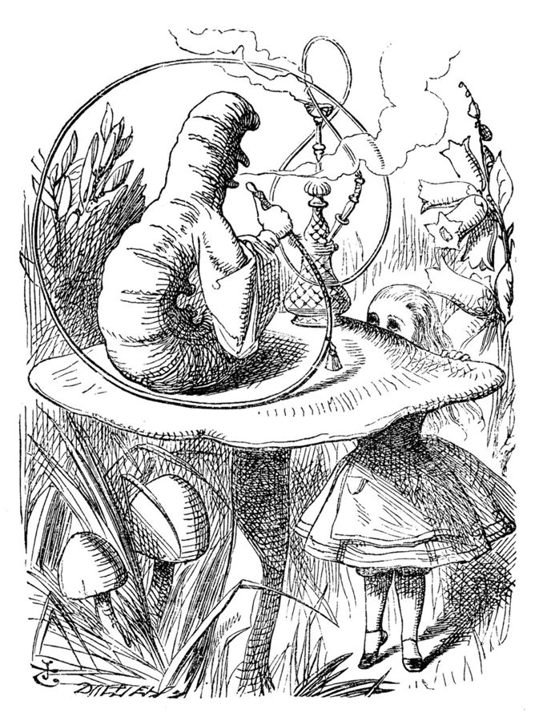

a dark and stormy night
… Hagrid on a dark and stormy night …
一个风雨交加的黑夜
英语里最出名的俗套开头，出自 1830 年的一部小说，史努比写小说也总这么起头。这里指海格在暴风雨夜找到哈利，见「书里的人和背景」。
引言回答全书的前提：好经理是天生的，还是练出来的？作者不讲理论，先讲自己的狼狈：二十五岁被上司一句「你和大家都处得来」推上经理的位置，第一次一对一就被昨天还是同事的下属一张臭脸打垮，第一次面试手抖了整整四十五分钟。中间插着她怎样从上海、休斯敦一路走进小得能塞进一场后院派对的 Facebook。读的时候抓两条线：她说害怕和怀疑是常态；她说这本书讲管理的「为什么」，写给不是高管的大多数经理。全书的口气在这里定调。
引言是全书的开头：作者交代自己是谁、怎么当上经理、为什么写这本书。第 1 章接着回答「经理到底是干什么的」：她 25 岁时以为管理就是「开会」和「升职」，第 1 章开头接着讲她当年对管理有多不懂。引言最后那句「好经理是练出来的」，第 1 章讲到「怎么知道自己适不适合当经理」时还会明说回头呼应，并补上一个前提。引言里那几个「第一次」（一对一、面试、宣布坏消息），后面都有专门的章节细讲。
「在乎到会读这本书，就在乎到能当好经理」是鼓励，不是保证。作者自己在第 1 章补了一句：前提是你得喜欢经理每天要做的事，真的想做。拿不准自己适不适合，接着读第 1 章那一节。
一个没受过训练、二十五岁的设计师，是怎么学会当经理的？好经理真能练出来吗？
读的时候带着这几个问题。不用先找答案，读完回来对照「检查一下理解」。
这一章的每一节一条，按原书顺序。粗体是本站给的节名，后面是档和英文词数；下面一行是原书小标题、纸书页码和这一节开头几个英文词；再下面是译本的小標題和开头几个字，在译本电子书里搜它就能跳过去。每节标了档：「先读」是这一章的骨架，「有空」例子更多、讲得更细，跳过不丢线。读完打个勾。
先把这一章用到、作者默认你懂的几个概念讲一遍。讲的是概念本身和它在管理界的来历，作者拿它推出什么，读原书时自己看。
硅谷公司里说 manager，不加修饰时一般指带人的经理（people manager）：有人向你汇报，你负责他们的招聘、成长和考核，对整个团队的结果负责。名字里也带 manager 的另两种岗位不是一回事：产品经理（product manager，PM）决定做什么、为什么做；项目经理（project / program manager）盯进度、协调各方。这两种通常没有下属，靠说服推动事情。
和带人的经理相对的是独立贡献者（individual contributor，IC）：工程师、设计师这类靠自己的产出被评价的人。不少科技公司给 IC 留了一条和经理并行的职级通道，见第 1 章的双通道晋升。中文里「经理」常常只是头衔，客户经理、销售经理未必带人；国内互联网公司说「组长」「带团队」，指的才是这种经理。
在这一章：作者 25 岁被上司问要不要当 manager，从设计师变成带设计师的经理。她也说这种经理不限于公司，老师、教练、队长都算。
以后带人碰到这些事，从这里查。每张卡先说动手前要想清楚什么，再用本站的话转述作者的办法（不照抄原书的清单），然后是书外的补充和最容易犯的错，最后指回书里讲它的那一节和纸书页码。全书的情境卡汇总在情境卡。
书里：引言开头，纸书 p.3；第 1 章 I Was Asked to Be a Manager，纸书 p.33–34
读英文纸书可能卡住的地方，按原书顺序分节排。灰色斜体是原文里连续的几个词，后面是纸书页码，翻书找得到；标「每个字都认识」的，是每个词都眼熟、合起来意思却变了的，最容易读错。点「记下」收进词本。
按在书里出现的顺序排，标题前是节号。只讲到读懂这一章需要的程度。书里的同事和下属是普通人，作者多用化名或只写名字，这里不另作介绍。
书里说她是 Facebook 第一个工程实习生，维基的写法是第一个实习生。书出版时她还在 Facebook，所以书里的「今天」是写书时的 2018 年前后：她的团队设计的是二十多亿人在用的产品。
作者 2006 年 5 月进去时，用户几乎只有高中生和大学生；News Feed（动态消息）同年 9 月才上线，9 月 26 日起才向所有 13 岁以上、有邮箱的人开放。那时的霸主是 MySpace：2005 年被新闻集团以 5.8 亿美元买下，第 1 亿个账号 2006 年 8 月注册（书里说 1.5 亿，和这条记载对不上）。「比 MySpace 还大」那句玩笑，按美国访客数算，2009 年 5 月成了真。Facebook 早年的办公室满墙涂鸦也出名：2005 年画家 David Choe 给它画壁画，选了股票没要现金，据报道到 2012 年上市时值约 2 亿美元。
Wayne Chang 书里只说是作者的好友，比她早半年进 Facebook，是他劝她「至少来实习看看」。她走上设计这条路并不是计划好的：朋友拉她来实习，另一位朋友叫她去和设计师坐在一起，她自己说是误打误撞多了一顶「设计师」的帽子。
海格那句：《哈利·波特》第一部里，哈利 11 岁生日那天的暴风雨夜，大块头海格破门而入，告诉他「你是个巫师」，从此进了魔法世界。作者借它说，被邀请当经理时她以为是这种「冒险召唤」。宝可梦那句：十几岁的少年被逼去参加十岁表弟表妹的宝可梦主题生日会，那张不情不愿的脸。《星球大战》、迈克尔·杰克逊、《E.T. 外星人》是美国 80 年代长大的孩子人人知道的，她作为移民小孩一概不懂。深夜写代码时放的 Daft Punk 是法国的电子音乐二人组。
三样都是美国管理圈的常备书。High Output Management（1983）是英特尔前 CEO Andy Grove 写的经理手册，第 1 章、第 3 章都会用到它，见经理的产出和一对一面谈。How to Win Friends and Influence People（1936）是卡耐基的为人处世书，中文常译《人性的弱点》。Crucial Conversations 是 Kerry Patterson 等四人 2002 年出的书，讲利害大、情绪高、意见不合时怎么谈，配套有企业培训课，作者说的是这门课。

作者的博客叫 The Year of the Looking Glass，书里说是写书前约四年开始写的。Looking Glass 指卡罗尔的续集《爱丽丝镜中奇遇》（1871），她引的那句却出自第一部《爱丽丝漫游奇境》第 5 章：毛毛虫问她是谁，爱丽丝说早上起床时还知道自己是谁，可从那以后好像已经变了好几回。作者借它说一个人一路在变，回头看才认得出来。
对着译本读这一章时，下面这些地方会把人读歪。方框里是译本的原句，在译本电子书里搜它就能找到；灰色斜体是英文原文那一处，后面是纸书页码。只收意思错了、反了、漏了的，措辞上的出入不收。全书的勘误汇总在译本勘误。
… wanted this meeting to feel normal …
译本：「只希望這會是一場令人感到正式的會議」
原文是她希望这次见面感觉很平常，就像昨天、前天两人还是同事时那样。她要的恰恰是别让它显得正式，译本的意思几乎反了。
… a whole lot of duct tape
译本：「要是抓準了時機，好好苦幹實幹一番」
原文说硅谷的创新来自聪明人、钢铁般的决心、碰巧赶上的好时机，再加上大量临时凑合的修修补补。译本把「运气」改成了「抓准时机」，把「凑合」改成了「苦干」，成了一条成功公式，原文自嘲的口气没了。
… could fit into a backyard party
译本：「整間公司有如一場後院派對」
原文是整个公司的人塞进一场后院派对都装得下，讲的是规模，和后面「比不上 MySpace」接着说。译本读起来像在说公司气氛随意热闹。
… sit with the designers and get …
译本：「建議，我可以考慮當設計師」
原文是朋友建议她坐到设计师旁边，参与决定屏幕上放什么。她后来说自己是误打误撞成了设计师；译本写成朋友直接劝她转行，「误打误撞」就说不通了。
… the new manager role would stretch me
译本：「我沒料到管理職遠遠超出我的能力」
stretch 是把人往外拉、逼人成长。原文说她没料到这个角色会这样逼着她长本事；译本像在说她能力不够、干不了。全书的论点正是「经理是练出来的」，这里别读成她不胜任。
… must have been changed several times …
译本：「但我想我之後一定會改變好多次」
原句是过去时：早上起床时还知道自己是谁，从那以后已经变了好几回。译本成了预言将来。作者取的正是「回头看才发现自己变了」这层意思，和她想象将来回看博客那句接着。
… care enough to be a great manager
译本：「你已經具備成為好經理的條件」
原文两次用 care enough：你在乎到会读这本书，就在乎到能成为很好的经理。她说的是「在乎」这份心够了，不是说你已经具备了当好经理的条件。这是全书的论点句，值得照原文理解。
I believe this as deeply as I believe anything: Great managers are made, not born.— §0，纸书 p.10。本站译：这是我最深信不疑的一件事：好经理是练出来的，不是天生的。
全书的论点，也是引言的标题。口气是下判断，而且押上了自己全部的信念：前半句 as deeply as I believe anything 就是「我信什么都没有信这个深」。她没给研究，凭的是自己从手抖的新经理一路做到副总裁的经历。后半句是译本：「優秀管理者是後天培養而成，不是天生的」，没问题；紧接着那句「在乎」，见「译本勘误」最后一条。研究怎么看，见「今天怎么看」。
I never thought managing was easy. I still don’t.— §0，纸书 p.8。本站译：我从没觉得管理容易，现在也不觉得。
两句短话，夹在一串「第一次」的狼狈之后。第二句的分量在 still：写这本书时她已经带了近十年人、团队大了几个数量级，还是这么说。这是给读者的安慰，也是全书的底色：她不装专家。
only when you’ve bought into the whys can you truly be effective in the hows— §0，纸书 p.10。本站译：只有真心认同了「为什么」，才能把「怎么做」做好。
这句交代了全书的读法：每一章都想先讲清为什么要有经理、为什么要做一对一面谈、为什么挑这个人。关键词 bought into 是真心认同，不只是听懂。读的时候可以拿她的理由去对照自己的经历，理由站不住的地方，具体的做法也要打个问号。
读完这一章再看。下面是作者在这一章里的主张，由本站按主张之间的逻辑重新组织，不按原书的顺序；每条后面是节号，拿不准就回书里那一节再读一遍。
这是她说自己信得最深的一句：你是谁不重要，在乎到会来读这本书，就在乎到能成为很好的经理。她拿自己作证：没受过正式训练，从一个连面试都手抖的新经理，学成了一个有自信的经理。
§0她讲了一串「第一次」：一对一被老同事的臭脸打垮，面试时怕被看穿是冒牌货，宣布谁当不了负责人前对着浴室镜子排练，上台演讲吓得要命。她说当时觉得别人都应付得很好，只有自己这样；她也说管理从来不容易，现在也不。
§0她说自己绝不是管理专家，主要靠做中学，犯过无数错：试一试，看哪里行、哪里不行，记下教训，下次更好。帮她的有培训课、反复翻的书，最重要的是同事；她还每周写博客，逼自己把乱糟糟的想法理清楚。
§0朋友劝她别等到退休再写，到那时就忘了起步时的滋味。她说顶尖 CEO 和领导力专家写的管理书已经很多，给高管的资源数不清，可大多数经理不是高管，带的是小团队，老师、教练也是经理。所以她写给被丢进深水区的新经理、忙不过来的经理、团队在猛长的经理和对管理好奇的人。
§0她希望读者弄懂管理的「为什么」，因为认同了为什么，怎么做才做得好。她也承认有些故事和看法可能只属于她的环境，一家长成《财富》500 强的科技创业公司；但给反馈、建文化、为将来做计划这些日常工作，很多是普适的。书不讲怎么做产品，也不讲 Facebook 的故事。
§0合起来：当经理不靠天赋，靠在乎和练习；一开始手忙脚乱是常态。她不是以专家身份，而是以刚走过这段路的人的身份，把「为什么」讲给后来的人听。
这本书 2019 年出版。下面挑出这一章里能被研究或后来的事情检验的说法，分「书里 / 当时 / 今天」几栏，并给一个结论。结论判的是标题里「书里的说法：」后面那一句。全书的这一节汇总在今天怎么看。
读完作者的主张，再看它站不站得住。每一块摆出三样：主流怎么看，作者怎么看，本站的评论。最后一句是本站对这一章的总体判断。
主流看法：领导力研究多认为先天、后天都有份，培训和教练有效但效果中等。盖洛普一派更看重天赋，主张先把人挑对；培训派认为多数能力可以学。
作者的看法：好经理是练出来的；在乎到会读这本书，就在乎到能成为很好的经理。§0
本站的评论：当作鼓励，这句话很好；当作结论，它少了一个条件，而作者自己在第 1 章补上了：你得喜欢经理每天要做的事，真想做。在乎是起点，练是过程，喜欢才撑得下去。这本书真正能帮上忙的，是她示范的那种练法：做、看结果、记下来、再做，外加每周写一篇把想法理清。这一套不靠天赋，谁都能照做。
主流看法：「彼得原理」（Laurence Peter，1969）说，人会被一路提拔到自己不胜任的位置。Benson、Li 和 Shue 2019 年在《经济学季刊》发表的研究，用多家公司销售人员的数据发现：公司爱提拔销售业绩最好的人，可提拔前业绩越好的人，当上经理后手下的业绩反而越差。
作者的看法：上司请她当经理的理由是她和每个人都处得来；她走出会议室才想，管理肯定不只是这样。§0
本站的评论：有意思的是，她的上司给的理由不是「设计最好」，作者自己也说她并不比那位同事强。Benson 等人的发现至少说明，业务尖子不一定是好经理，上司没拿「谁最强」当理由，这一点是对的。但「处得来」也有坑：人缘好的人常常最怕说难听的话，而第 4 章讲的正是这件事。人缘是起点，不是答案，作者那句「肯定不只是这样」问对了。
主流看法：管理学的权变理论（Fiedler 1967 年的模型是最早的之一）认为，没有放之四海皆准的最佳管理方式，要看人、任务和环境。2023 年 Meta 的「效率之年」反过来砍管理层级：扎克伯格在公开信里说，公司里很多经理只带几个人，要请很多经理转回 IC。
作者的看法：有些故事可能只属于她的环境，一家长成《财富》500 强的科技创业公司；但给反馈、建文化、为将来做计划，很多是普适的。§0
本站的评论：她这句提醒很老实，读的时候值得记着。最该打折扣的前提是「增长」：团队几年里大了几个数量级，新经理的位子一个接一个空出来，「被问要不要当经理」才这么常见。在不增长或收缩的公司里，经理的位子少，转回去也可能不容易。至于反馈、一对一面谈这些基本功，本站同意她：换个环境照样用得上。
本站的总体看法：引言是全书最好读的一篇，几段「第一次」写得真实好笑，能让带过人的读者会心一笑，也让没带过的人少一点害怕。值得带走的是「害怕是常态」「边做边记」；「在乎就能当好」当鼓励听，记得配上第 1 章的那个前提；硅谷高速增长的底色，后面每一章都要记着。
处境都是本站编的，不是书里的例子。先自己判断，想好了再点开看本站的分析；有的题没有唯一答案，分析里讲取舍。全书的判断题汇总在判断题。
你在一家互联网公司带一个六人的客户端组，刚满半年。这周很糟：周一的需求评审你没压住场，两位同事当着产品经理的面吵了起来；周三一位老同事在一对一里说想转岗；周五你发现自己已经三周没写过一行代码。晚上你给带过你的前辈发消息：
你：「我可能真不是带人的料。别的组长好像都挺轻松，就我天天在救火。我在想要不要跟老板说，还是回去写代码。」
如果你是那位前辈，你会怎么回？他该怎么判断要不要回去写代码？
先分开两件事：他是不喜欢这份活，还是害怕自己做不好？作者在引言里说，刚当经理时觉得「别人都应付得很好，只有自己这样」是常态，她自己面试手抖、一对一被甩脸色，最后也练出来了。这一周的三件事，都是新经理头一年常碰到的，单凭它们得不出「不是这块料」。
可以建议他再给自己一段时间，换一种过法：每周写下一件没做好的事和下次怎么做，就像作者靠每周写博客理清思路；找一两位带过人的前辈定期聊，作者说同事是帮她最多的。几个月后再问自己：每天做的这些事（谈话、协调、帮别人解决问题），我是越来越能做，还是越来越不想做？如果是后者，回去做 IC 是正当的选择，不是失败，见第 1 章。
书里对应：§0 她的「第一次」和边做边学，纸书 p.3–9。
你是部门负责人，团队扩张，要从前端组提一个组长。小陈技术最强、产出最高，主动说想升，但不太耐烦给人解释，代码评审的评论常常很冲。老孙技术中上，组里新人卡住都去找他，跨组扯皮也常是他出面摆平。你私下问老孙，他说：
老孙：「我还没想好，怕开会太多，写不了代码。」
你倾向谁？在决定之前，你还会做什么？
没有唯一答案。只看「谁最强」是彼得原理的老坑：小陈当上组长，你可能少一个最好的工程师、多一个让人难受的经理。先问清小陈想要的是什么：是更高的职级和钱，公司有没有不带人也能升的通道？老孙的犹豫反倒是健康的，他在想这份工作每天要做什么。可以如实告诉他会多出哪些会和谈话，让他先带一个新人或牵头一个小项目试试。
别因为团队急着要人，就让一个不想做的人「顾全大局」接下。不管选谁，都要和落选的那位谈一次。
书里对应：§0 上司请作者当经理的理由，纸书 p.3；第 1 章 How Do You Know if You’ll Be a Great Manager?，纸书 p.28–34。
先在心里答，再点开。答错的那题，回书里把对应那一节再读一遍。
理由是团队在长、需要再来一个经理，而她和每个人都处得来。她当时觉得这是升职，像收到冒险的邀请，马上答应；走出会议室才想到，管理肯定不只是「处得来」。
她希望一切像平常一样，对方就算不喜欢她当经理，至少能接受。结果对方一脸不情愿，她觉得那张脸写着「你根本不知道自己在干什么」，而她当时觉得对方说得一点没错。
她在 Facebook 实习两个月后转正；因为画画时学过 Photoshop，朋友建议她坐到设计师那边参与决定界面。创业公司里大家身兼数职，她就这样误打误撞多了「设计师」这个角色，不是事先规划的。
因为到那时她早就记不得起步时一切又新又难的滋味了。她也想到，写给高管的管理书和资源已经很多，而大多数经理带的是小团队，刚走过这段路的人写，对他们更有用。
管理的「为什么」：为什么要有经理、为什么要做一对一面谈、为什么选这个候选人。她认为只有真心认同了为什么，怎么做才能做得好。
有些故事和看法可能只属于一家长成《财富》500 强的科技创业公司，比如招人很频繁、会议很多。给反馈、建立健康的文化、为将来做计划这些日常工作，她认为很多是普适的。
用一句话说这一章：
想一想：你第一次带人（或第一次被一个新经理带）时，最难忘的一个场面是什么？现在回头看，当时缺的是本事，还是有人告诉你「这很正常」？
读过又忘了，从这里想起来。挑的是这一章最值得记住的故事、办法和说法，不按原书顺序；每条后面是节号，想细看就回书里那一节。全书各章的这一节都收在全书回顾。
一句话：好经理是练出来的；刚上任时的害怕和怀疑，是每个人都会经历的常态。
二十五岁的作者被上司请去当经理，理由只有这一句。她以为这就是升职，当场答应，走出会议室才想：管理肯定不只是这样吧？
§0第一次一对一，她迟到五分钟，问了句「你在忙什么」。昨天还是同事的下属一脸不情愿，像被逼去参加十岁小表亲的宝可梦生日会。
§0她是 Facebook 第一个工程实习生，那时全公司塞进一场后院派对都装得下，大家深夜放着 Daft Punk 写代码，笑着说有一天要比 MySpace 还大。
§0两个下属都想当新项目的负责人，她得拒绝一个。她在家对着浴室镜子排练，担心自己是不是在打碎别人的梦，对方会不会当场辞职。
§0别人劝她写书，她说等职业生涯晚期吧。朋友翻了个白眼：到那时你早忘了刚开始有多难了。她觉得朋友说得对。
§0